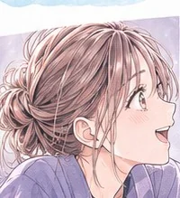
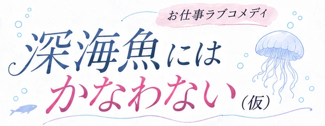
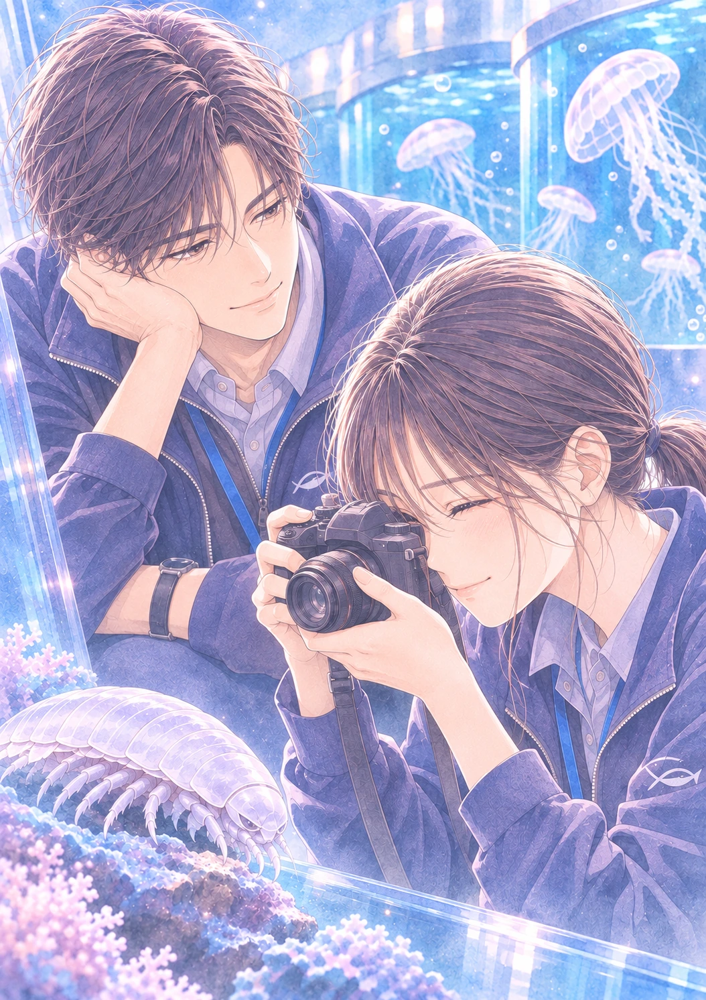
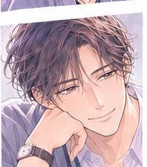

藤沢 美波 28歳
深海魚を愛する飼育員
大学院まで進学した深海魚オタク。豊富な専門知識を持ち、深海魚の飼育に情熱を注ぐ。過去の恋愛経験から、深海魚に夢中な自分では恋愛がうまくいかないと思っている。

深海魚に夢中な彼女と、そんな彼女に夢中になる彼。
王道少女漫画のときめきを描く、お仕事ラブコメディ。

恋をしたことで見えてくる、
人間の不器用さやかわいさ
好きなものを追いかけた先で、
想像もしなかった世界に出会うこと
出会いによって、
お互いの人生が変わっていくこと
舞台は、閉館の危機にある海辺の町の小さな水族館。
深海魚を愛する飼育員・美波は、廃止寸前の深海魚コーナーを守るため、館長の息子・洋介とSNS広報に挑む。
正反対の二人が、仕事にも恋にも不器用にぶつかりながら、「欠点」だと思われていたものを魅力に変えていく。

深海魚を愛する飼育員
大学院まで進学した深海魚オタク。豊富な専門知識を持ち、深海魚の飼育に情熱を注ぐ。過去の恋愛経験から、深海魚に夢中な自分では恋愛がうまくいかないと思っている。

水族館を愛する合理主義者
館長の息子。幼い頃から親しんだ水族館を守るため、東京で経験を積んで帰郷。恋愛にはそれなりに慣れているが、美波に恋をしてからは不器用になる。
経営難の水族館に帰ってきた洋介は、経費削減のため深海魚コーナーの廃止を提案する。
猛反対する美波に、洋介は「深海魚コーナーを残すには年間来館者を現在の倍、10万人規模に増やす必要がある」と告げる。
「じゃあ、私が10万人呼びます！」
しかし、美波には集客の知識がない。
「……で、何したらいいんですか！？」
洋介とともにSNS広報に挑戦することになるが、期限までに成果が出なければ深海魚コーナーは廃止という条件付き。
主人公がどんな難題にぶつかり、何を変えていくのか。仕事と恋愛、二つの軸で物語が進む。
専門的すぎるSNS投稿は見てもらえず、館内の解説パネルもほとんど読まれていない。
洋介とともに来館者目線で展示や解説を見直し、深海魚の不思議な生態を伝えるリール動画に自ら出演。楽しそうに深海魚を語る美波の姿が、次第に人気を集めていく。
大学時代、恋人に「俺と魚とどっちが大事なの」と言われて別れた美波。洋介への恋心に気づいたとたん、深海魚の話を控えはじめる。
急に魚の話をしなくなった美波に、洋介は「俺、なんかした？」と問いかける。
「好きな人の前では、控えた方がいいのかなって……」
うっかり口にした「好きな人」。真っ赤になる美波に、洋介は照れながら返す。
「俺は、楽しそうに魚の話をしてる藤沢さんが好きだけど」
二人は晴れて恋人同士になる。
SNSのフォロワーは増えたものの、来館者数は伸び悩む。開館しても誰一人来館しない朝を迎えることも。
美波は毎年遠足に来る小学生たちを自ら案内し、飼育員ならではの知識や経験を生かして子どもたちの心をつかむ。
館内展示の改善や年間パスポートの活用、地元の漁師との連携を通じて、少しずつ水族館そのもののファンを増やしていく。
付き合いはじめた二人。だが、深海魚コーナーの存続を決めるのは洋介自身だ。
「彼女だから残した」と言わせたくない美波と、条件を一切ゆるめない洋介。
迎えた期限の日、来館者数は目標に届かず、洋介は約束どおり廃止を告げる。
その日の夜、心配する洋介に美波は告げる。
「……今日は、会いたくないです」
洋介の判断が正しいと理解しながらも、気持ちが追いつかない美波。
仕事で妥協しないことと、恋人として支え合うことの違いに気づき、二人は改めて向き合う。
深海魚コーナーの廃止を発表すると、全国の深海魚ファンから嘆願書が届き、地元住民からも存続を願う声が寄せられる。
それは広報活動だけでなく、美波が飼育員として長年積み重ねてきた努力の成果でもあった。
深海魚コーナーの価値を見直した洋介は、新たな経営戦略を打ち出す。
「深海魚に特化した水族館にしませんか」
設備改修のためのクラウドファンディングに挑戦。飼育員による特別解説ツアーなどの返礼品も人気を集め、募集終了間際に目標金額を達成する。
特別ツアーは新たな収益源となり、かつて廃止しようとしていた深海魚コーナーが、水族館の看板となる。
水族館は経営難を乗り越え、美波と洋介は、仕事でも人生でもパートナーとなる。
そして迎えた、水族館での結婚式。
ウェディングドレス姿でも魚に夢中な美波を見て、洋介はつぶやく。
体調を崩した深海魚を、洋介とともに懸命に世話する美波。
深夜、ようやく回復の兆しが見え、安心した美波の目から涙がこぼれる。
その姿に、洋介は思わず彼女の頭を撫でてしまう。自分でも予想外の行動に戸惑いながら、美波への恋心を自覚する。
前回のフィードバックをもとに「好き」をさらに掘り下げ、「やっぱり少女漫画が大好きなんだ！」と再認識。
恋愛要素を強め、交際前だけでなく交際後に訪れる壁も追加した。
また、実際の水族館の経営再建事例をリサーチし、主人公たちが直面する困難と、その乗り越え方を具体化した。
仕事への情熱が恋のきっかけになり、恋をすることで二人の知らなかった表情が見えてくる。（イラストはタップで大きく表示できます）
「SNSの研究」のはずが、なんだかデートみたい。美波が欲しがった深海魚のガチャを、洋介が何度も回してやっと引き当てる。嬉しそうな彼の笑顔に、今度は美波の胸が高鳴る。
美波は変わらず魚を語り、洋介はそんな美波を見つめている。
休日の街で、メンダコのイヤリングを見つけた洋介。いつも冷静な彼が、好きな人のことを考えて、ひとりで少し嬉しくなる。